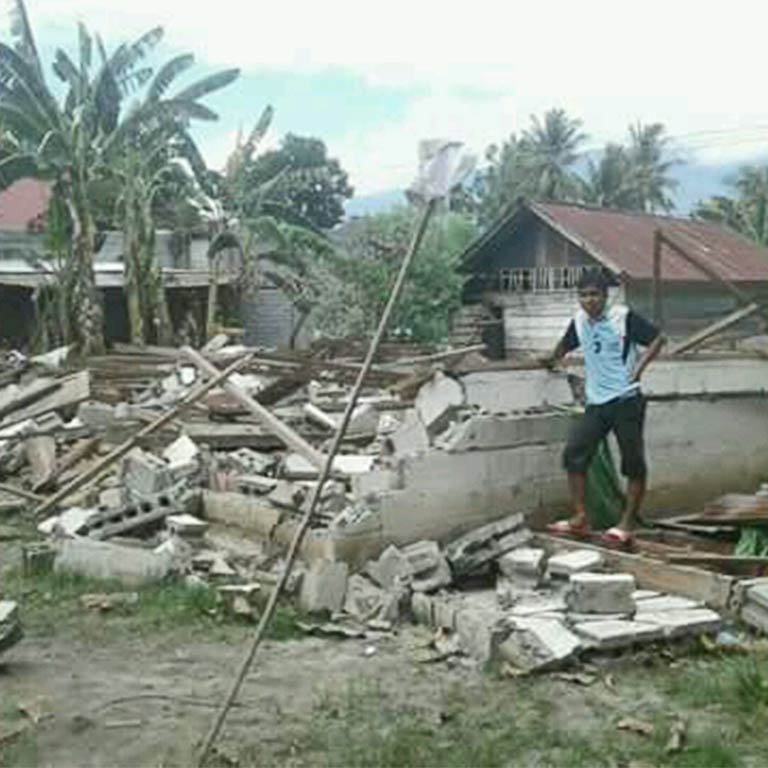
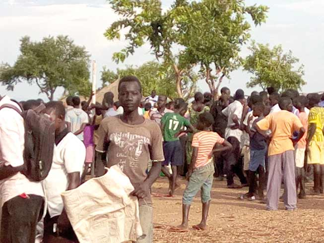
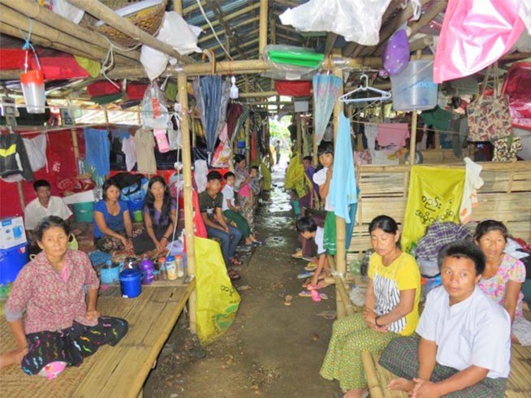

Indonesia Earthquake and Tsunami
Barnabas Fund supports Christians suffering for their faith
Working in over 80 countries we provide hope and aid to the persecuted Church

Hungry, ignored and struggling to survive: help us to feed the most vulnerable Christian refugees fleeing war in
South Sudan

Help Kachin Christians facing genocide in Myanmar (Burma)